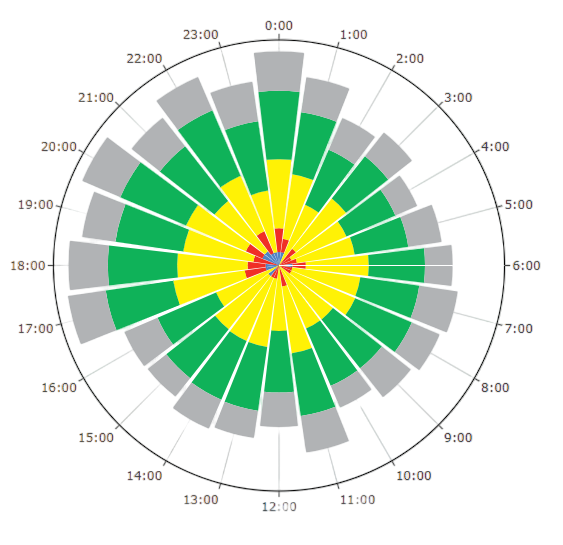

Hello!
Patients Visits Calendar A visual representation of daily patient visit trends by week, with bubble sizes indicating visit volume—highlighting peak days and patterns at a glance.
ER Patients Visits Traffic
Combine markdown and Julia code to create dynamic documents that are fully reproducible. Quarto executes Julia code via the IJulia Jupyter kernel, enabling you to author in plain text (as shown below) or render existing Jupyter notebooks.
CTAS Level 24 Hours
Patient Volume Distribution:
- CTAS 3 and CTAS 4 make up the majority of patients.
- CTAS 1 and CTAS 2 (most urgent) cases are relatively rare.
- CTAS 5 (least urgent) maintains a steady low volume
Peak Times:
- The peak volumes around 17:00-20:00.
- CTAS 4 volumes increase significantly in evening hours
- CTAS 3 peaks during afternoon/early evening
- Critical cases CTAS 1 and CTAS 2 occur sporadically throughout the day

Quarto includes native support for Observable JS, a set of JavaScript enhancements created by Mike Bostock (the author of D3). Observable JS uses a reactive execution model, and is especially well suited for interactive data exploration and analysis.

ER KPIs Analytics
ER KPIs analytics helps optimize Emergency Department performance by analyzing patient wait times, admission and discharge rates, and length of stay. It improves triage efficiency, identifies bottlenecks in patient throughput, and tracks visit volumes and seasonal trends.
Emergency Room (ER) Traffic
An animated storytelling chart that visually demonstrates how patient visits are distributed across different dispositions and how they progress over time.
Patients Visits Trend
Analyzing patient visit trends in the Emergency Department (ED) helps optimize operations by identifying peak times, repeat visit patterns, and the acuity of cases. Tracking seasonal fluctuations and patient demographics enables proactive resource allocation and tailored care strategies.
Triage Away
Helps improve ED performance by identifying non-urgent patients and redirecting them to appropriate care settings, reducing overcrowding and optimizing resource use.These insights ensure critical cases receive timely care while minimizing unnecessary ED congestion.
Resource Allocation
Study patient demographics, diagnosis trends, and treatment plans to optimize resource allocation and care protocols.
Inpatient & Outpatient
For outpatient care and inpatient admission, analyzing length of stay, visit volumes, return rates, and wait times enables better redirection of non-emergency cases and enhances patient throughput. These insights drive more efficient operations, reduce overcrowding, and improve overall patient outcomes in the ED.